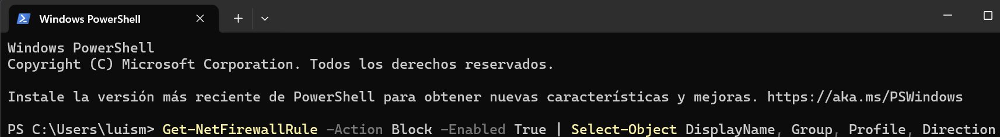
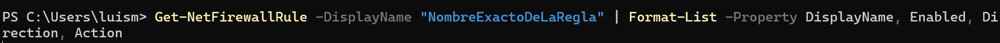

Guía para la revisión de configuración de equipos
Esta guía explica cómo auditar la configuración de seguridad para verificar que un programa o puerto tenga la conexión a internet correctamente bloqueada, de acuerdo a los protocolos de hardening.
Opción 1: Verificación visual de reglas en el firewall (método recomendado)
Este método es el más directo para confirmar visualmente que el firewall de Windows está bloqueando una aplicación específica.
Abrir el firewall de Windows
En el menú Inicio, busca "Firewall de Windows Defender" y selecciona la opción "Firewall de Windows Defender con seguridad avanzada".
Inspeccionar las "Reglas de salida" y "Reglas de entrada"
En la columna izquierda, selecciona "Reglas de salida". Busca en la lista la aplicación o servicio que, por protocolo, debe estar bloqueado. El objetivo es encontrar la regla correspondiente.
Confirmar que la regla esté deshabilitada (bloqueada)
Verifica que la regla tenga un ícono de círculo rojo 🚫 a su izquierda y que en la columna "Acción" diga "Bloquear". Si es así, el bloqueo está aplicado correctamente. Si haces clic derecho, la opción disponible será "Habilitar regla", lo que confirma su estado inactivo.
Verificación avanzada por línea de comandos
Opción 2: Usar PowerShell para auditar reglas
PowerShell permite filtrar y verificar rápidamente el estado de las reglas. Se debe ejecutar con privilegios de administrador.
- Abrir PowerShell como administrador: Haz clic derecho en Inicio y selecciona "Terminal (Administrador)" o "Windows PowerShell (Administrador)".

- Listar todas las reglas de bloqueo activas: Para ver una lista de todas las reglas cuya acción es "Bloquear", usa el siguiente comando. Esto es útil para una auditoría general.
Get-NetFirewallRule -Action Block -Enabled True | Select-Object DisplayName, Group, Profile, DirectionEsto mostrará el nombre, grupo y dirección de todas las reglas que están activamente bloqueando conexiones.
 - Verificar una regla específica por nombre: Si necesitas auditar una regla en particular, usa este comando, reemplazando
"NombreExactoDeLaRegla".Get-NetFirewallRule -DisplayName "NombreExactoDeLaRegla" | Format-List -Property DisplayName, Enabled, Direction, ActionEl resultado esperado es Enabled: True y Action: Block. Esto confirma que la regla está activa y configurada para bloquear.

Opción 3: Usar un verificador de puertos en línea (validación externa)
Este método es crucial para confirmar que un puerto no solo está bloqueado internamente, sino que es inaccesible desde internet.
Desde un equipo externo a la red que se está auditando, busca en un navegador "verificador de puertos online" o "online port scanner". Introduce la dirección IP pública del equipo auditado y el número de puerto que debe estar bloqueado. La herramienta debe reportar el puerto como "Cerrado" (Closed) o "Filtrado" (Filtered). Un resultado de "Abierto" (Open) indica una falla en el bloqueo.